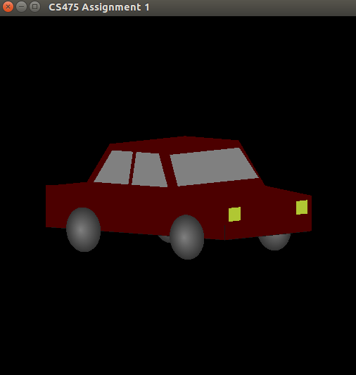
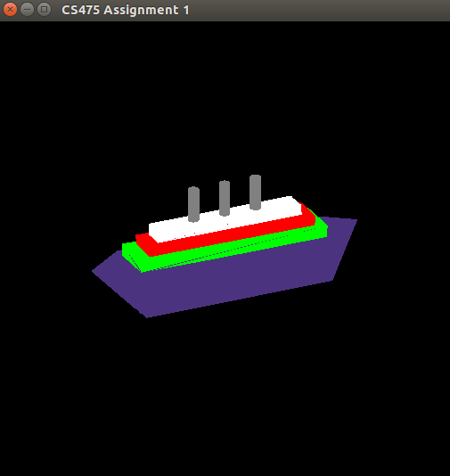
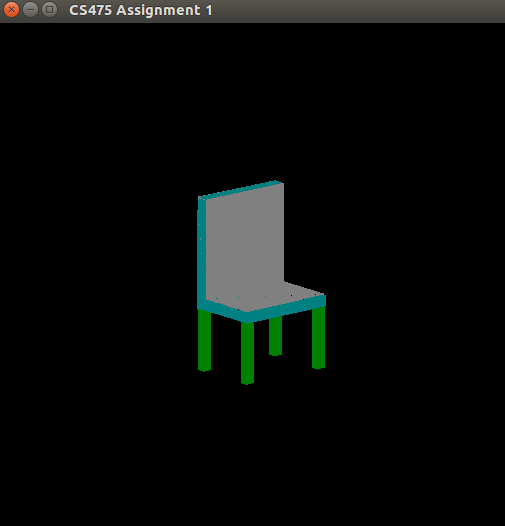

Modelling-Viewing Pipeline : Modelling
The images of the models are as follows:

Car

Titanic

Chair
Features and Instructions:
Run the Makefile using make command, to get the executable "assign01".
Using the command ./assign01 a window appears where the images can be drawn and loaded.
The program starts in modelling mode initially, mode can be changed by pressing "M" (modelling mode) or "I" (inspection mode).
In the modelling mode, "left" clicking the mouse will add a point to your model and "shift+left" clicking the mouse will remove the last added point.
While modelling to create a triangle "3" points should be clicked. A triangle is formed for every 3 successive clicked points.
In the modelling mode, we can change the value of z-plane by pressing "F" and entering the new z-value.
The default color value of the point can be changed by pressing "C" key and entering three color values corresponding to "R", "G", "B" respectively (each value must be in [0-1]).
In Inspection mode, the "left/right arrows" allows the model to rotate about the Y-axis, the "up/down arrows" allows the model to rotate about the X-axis, and "PgUp/PgDn" allows rotation about the Z-axis
The keys "W,S,A,D,Z,X" allow translations along the positive and negative Y, X and Z axis respectively.
We can load a partially created model to the current drawing on the window by pressing "L" and continue adding points to it (in the modeling mode), the entire drawing will be a single model.
Multiple models can be created at once (upto 10). To draw a new model press "N" key, now you can create a new model or else the entire drawing will be considered as a single model.
Pressing "R" moves the centroids of all the models to the origin. Note that the rotations of each model are performed about their own centroid.
By pressing "K" we can save the last model (since multiple models are present) and specifying the filename. The points are stored in X,Y,Z,R,G,B format.
While loading and saving models specify the complete file name with ".raw" extension.
The key "O" helps to nullify all the applied rotations of existing models (for convenience).
Each line of the .raw file must be of the format 'X,Y,Z,R,G,B' with the ',' in between the values.